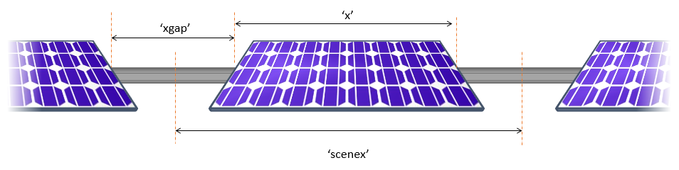

1 - Intro bifacial_radiance modeling#
This journal shows how to model an AgriPV site, calculating the irradiance not only on the modules but also the irradiance received by the ground to evaluate available solar ersource for plants.
We assume that bifacia_radiance and radiance are properly installed.
These journal outlines 4 useful uses of bifacial_radiance and some tricks:
Creating the modules in the AgriPV site
Adding extra geometry for the pillars/posts supporting the AgriPV site
Hacking the sensors to sample the ground irradiance and create irradiance map
Adding object to simulate variations in ground albedo from different crops between rows.
Steps:
0. Setup#
!pip install pyradiance
Requirement already satisfied: pyradiance in c:\users\sayala\appdata\local\programs\python\python311\lib\site-packages (0.5.0)
!pip install git+https://github.com/NREL/bifacial_radiance.git@development
^C
Collecting git+https://github.com/NREL/bifacial_radiance.git@development
Cloning https://github.com/NREL/bifacial_radiance.git (to revision development) to c:\users\sayala\appdata\local\temp\1\pip-req-build-om50snwh
Resolved https://github.com/NREL/bifacial_radiance.git to commit b13b3efc0ae7cbe064de28e0ca875b6dc34ee04c
Installing build dependencies: started
Running command git clone --filter=blob:none --quiet https://github.com/NREL/bifacial_radiance.git 'C:\Users\sayala\AppData\Local\Temp\1\pip-req-build-om50snwh'
warning: the following paths have collided (e.g. case-sensitive paths
on a case-insensitive filesystem) and only one from the same
colliding group is in the working tree:
'docs/images_wiki/Webinar/mainsteps.PNG'
'docs/images_wiki/Webinar/mainsteps.png'
'docs/images_wiki/Webinar/wrapper.PNG'
'docs/images_wiki/Webinar/wrapper.png'
Running command git checkout -b development --track origin/development
Branch 'development' set up to track remote branch 'development' from 'origin'.
Switched to a new branch 'development'
import bifacial_radiance as br
import numpy as np
import pandas as pd
# This information helps with debugging and getting support :)
import sys, platform
print("Working on a ", platform.system(), platform.release())
print("Python version ", sys.version)
print("Pandas version ", pd.__version__)
print("bifacial_radiance version ", br.__version__)
Working on a Windows 10
Python version 3.11.7 | packaged by Anaconda, Inc. | (main, Dec 15 2023, 18:05:47) [MSC v.1916 64 bit (AMD64)]
Pandas version 2.1.0
bifacial_radiance version 0.4.2+323.gdc53a62.dirty
1. Create bifacial_radiance object#
import os
from pathlib import Path
testfolder = 'Demo1'
if not os.path.exists(testfolder):
os.makedirs(testfolder)
print ("Your simulation will be stored in %s" % testfolder)
Your simulation will be stored in Demo1
demo = br.RadianceObj('Demo1',path = testfolder)
path = Demo1
Download and read the weather data#
epwfile = demo.getEPW(40.7608, -111.8910)
metdata = demo.readWeatherFile(epwfile, coerce_year=2024, starttime='2024-08-27_1300', endtime='2024-08-27_1430')
Getting weather file: USA_UT_Salt.Lake.City.725720_TMY2.epw
... OK!
8760 line in WeatherFile. Assuming this is a standard hourly WeatherFile for the year for purposes of saving Gencumulativesky temporary weather files in EPW folder.
Coercing year to 2024
Filtering dates
Saving file EPWs\metdata_temp.csv, # points: 8760
Calculating Sun position for Metdata that is right-labeled with a delta of -30 mins. i.e. 12 is 11:30 sunpos
demo.metdata.datetime
[Timestamp('2024-08-27 13:00:00-0700', tz='UTC-07:00'),
Timestamp('2024-08-27 14:00:00-0700', tz='UTC-07:00')]
Set the albedo#
You can pass a value for fixed value, an existing material in ground.rad, or empty it will grab the albedo column from the weatherdata
demo.setGround(0.2)
Loading albedo, 1 value(s), 0.200 avg
1 nonzero albedo values.
Make the module#

# MakeModule Parameters
numpanels = 1 # AgriPV site has 3 modules along the y direction
module_x = 1 # m
module_y = 2 # m. slope we will measure. if x>y module is in landscape-orientation.
xgap = 0.02 # m
zgap = 0.1 # m
#Add torquetube
tubeParams = {'tubetype':'round', # other options: 'square', 'hex', 'round'
'diameter':0.1, #m
'material':'Metal_Grey', # other common option: 'black'
'axisofrotation':True,
'visible':True}
PVmodule=demo.makeModule(name='PVModule1',x=module_x,y=module_y,numpanels=numpanels,
xgap=xgap, zgap=zgap, tubeParams=tubeParams)
#Alternative:
PVmodule.addTorquetube(diameter=0.1, material='Metal_Grey', tubetype='round') # Object-oriented addition of features to the PV module
Module Name: PVModule1
Module PVModule1 updated in module.json
Pre-existing .rad file objects\PVModule1.rad will be overwritten
Module PVModule1 updated in module.json
Pre-existing .rad file objects\PVModule1.rad will be overwritten
Make the trackerdictionary#
limit_angle = 50 # tracker rotation limit angle. Setting it ridiculously small so this runs faster.
angledelta = 0.01 # sampling between the limit angles.
backtrack = True
gcr = 0.33 # Ground coverage ratio, GCR = collector-width/pitch
cumulativesky = False
trackerdict = demo.set1axis(metdata = metdata, limit_angle = limit_angle, backtrack = backtrack,
gcr = gcr, cumulativesky = cumulativesky)
Make the Sky#
demo.gendaylit1axis()
Creating ~2 skyfiles.
Created 2 skyfiles in /skies/
{'2024-08-27_1300': {'surf_azm': 270.0,
'surf_tilt': 0.24,
'theta': 0.24,
'dni': 753,
'ghi': 865,
'dhi': 215,
'temp_air': 28.9,
'wind_speed': 9.3,
'skyfile': 'skies\\sky2_40.77_-111.97_2024-08-27_1300.rad'},
'2024-08-27_1400': {'surf_azm': 270.0,
'surf_tilt': 17.31,
'theta': 17.31,
'dni': 867,
'ghi': 872,
'dhi': 146,
'temp_air': 29.4,
'wind_speed': 7.7,
'skyfile': 'skies\\sky2_40.77_-111.97_2024-08-27_1400.rad'}}
Make the Scene#
sceneDict = {'pitch': 6,'hub_height':2.5, 'nMods': 3, 'nRows': 1}
scene = demo.makeScene1axis(module=PVmodule, sceneDict=sceneDict)
Making ~2 .rad files for gendaylit 1-axis workflow (this takes a minute..)
2 Radfiles created in /objects/
Put it all together#
octfile = demo.makeOct1axis()
Making 2 octfiles in root directory.
Created 1axis_2024-08-27_1300.oct
Created 1axis_2024-08-27_1400.oct
If desired, you can view the Oct file at this point:
rvu -vf views\front.vp -e .01 tutorial_1.oct
## Comment the ! line below to run rvu from the Jupyter notebook instead of your terminal.
## Simulation will stop until you close the rvu window
#!rvu -vf views\front.vp -e .01 1axis_2024-08-27_1400.oct
Analyze the Panel#
analysis = br.AnalysisObj()
trackerdict = demo.analysis1axis(trackerdict, modWanted=2, rowWanted = 2, sensorsy=1)
Linescan in process: 1axis_2024-08-27_1300_Scene0_Row2_Module2_Front
Linescan in process: 1axis_2024-08-27_1300_Scene0_Row2_Module2_Back
Saved: results\irr_1axis_2024-08-27_1300_Scene0_Row2_Module2.csv
Index: 2024-08-27_1300. Wm2Front: 855.4167000000001. Wm2Back: 66.99051
Linescan in process: 1axis_2024-08-27_1400_Scene0_Row2_Module2_Front
Linescan in process: 1axis_2024-08-27_1400_Scene0_Row2_Module2_Back
Saved: results\irr_1axis_2024-08-27_1400_Scene0_Row2_Module2.csv
Index: 2024-08-27_1400. Wm2Front: 861.7214. Wm2Back: 47.13737
results = demo.calculateResults()
No CECModule data passed; using default for Prism Solar BHC72-400
Bifaciality factor of module stored is 1
demo.CompiledResults
| timestamp | name | modNum | rowNum | sceneNum | x | y | z | mattype | rearMat | ... | Pout_raw | Pout_Gfront | BGG | BGE | Mismatch | Pout | Wind Speed | DNI | DHI | GHI | |
|---|---|---|---|---|---|---|---|---|---|---|---|---|---|---|---|---|---|---|---|---|---|
| 0 | 2024-08-27_1300 | 1axis_2024-08-27_1300_Scene0 | 2 | 2 | 0 | [-6.000716] | [3.673502e-16] | [2.670998] | [groundplane] | [sky] | ... | NaN | NaN | NaN | NaN | NaN | NaN | 9.3 | 753 | 215 | 865 |
| 1 | 2024-08-27_1400 | 1axis_2024-08-27_1400_Scene0 | 2 | 2 | 0 | [-6.05088] | [3.642786e-16] | [2.663255] | [groundplane] | [sky] | ... | NaN | NaN | NaN | NaN | NaN | NaN | 7.7 | 867 | 146 | 872 |
2 rows × 29 columns